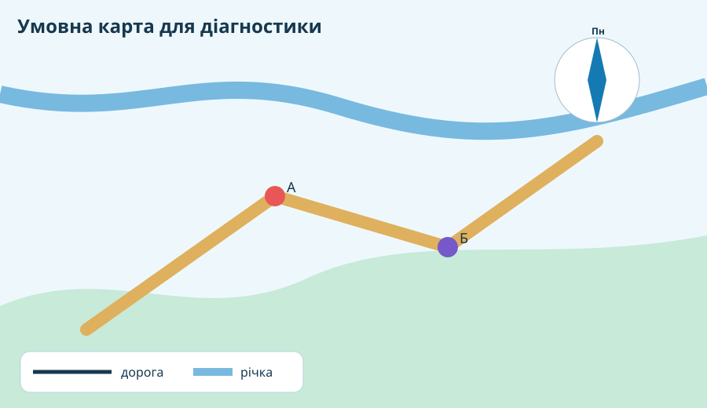

1. Візуальна розминка: що саме Ви бачите?
Розгляньте чотири реальні типи географічних зображень. Сформулюйте, яку інформацію кожне дає краще за інші.


2. Швидка діагностика: 4 рішення без підказки
3. Картографічна лабораторія

Завдання: точка Б розташована від точки А переважно на схід чи захід? Який об’єкт перетинає дорогу між ними? Обґрунтуйте відповідь двома ознаками карти.
Масштаб без механічного заучування
Перевірка сенсу: якщо карта стала дрібнішою, одна й та сама відстань у сантиметрах має відповідати більшій реальній відстані.
4. Жива карта: чи можна довіряти одному шару?
Відкрийте реальну OpenStreetMap нижче. Знайдіть Запоріжжя. Запишіть три типи об’єктів, які видно на карті, і один тип інформації, якого на ній недостатньо для повного географічного висновку.
5. Коротке відео-повторення
Перед фінальною роботою перегляньте короткий ролик про базові навички читання карти: легенду, напрям, масштаб і типи карт.
6. CER — головний висновок теми
Питання: чому для географічного дослідження часто недостатньо одного картографічного джерела?
7. Домашня робота
Повторіть §§1–13. Для слабких місць відкрийте електронні матеріали Всеукраїнської школи онлайн. Складіть собі короткий список: «3 теми, які знаю добре / 2 теми, які треба повторити».
8. Діагностувальна тематична робота 1 — 10 балів
Тест відкривається лише після введення даних учня.